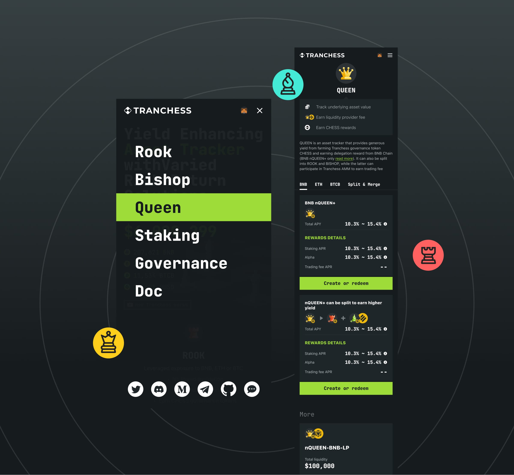
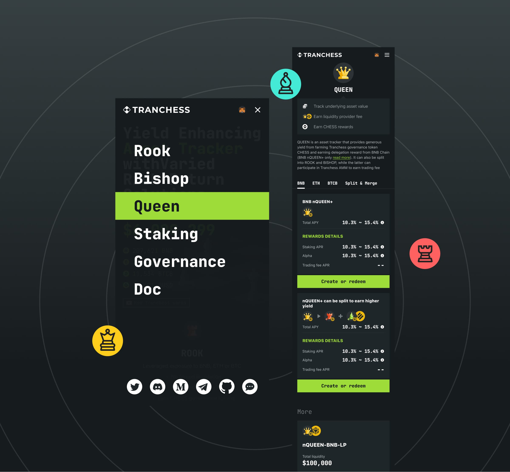

Loading...
Loading...
In recent years, I have collaborated with several emerging Web3 and crypto projects, contributing to their brand identity and user experience design. Below are some notable projects:
BlockBeats: Blockchain News Platform
Role: Brand Identity and UI Design
BlockBeats is a professional blockchain research institution and information platform established in 2018, providing the latest updates on crypto, Web3, and NFT market trends.
I was involved in defining the initial brand direction and UI standards during its inception. In 2020, as the platform expanded, I led a brand upgrade to enhance its identity and application scenarios.
To improve content delivery efficiency, we introduced features like a "Flash News" section for real-time updates and a "Research Institute" section for in-depth industry analyses. Additionally, we developed a "Chain Ecosystem" and podcast content, inviting industry opinion leaders to join the platform, thereby strengthening its media matrix.

A notable achievement was the "Crypto City Camp" New York event, held on April 13 2023, where BlockBeats-branded bus toured New York City, showcasing the brand's presence.
The event featured a hybrid East-meets-West format, including:
A Manhattan bus parade showcasing Chinese Web3 projects.
Panel discussions, CryptoArt/NFT exhibitions, and an afterparty.
Collaborations with prominent Chinese NFT projects like The Weirdo Ghost Gang, STEPN (a Web3 fitness game).
Tranchess: DeFi Investment Platform
Tranchess is a chess-themed decentralized finance (DeFi) asset management platform founded in 2020, inspired by the concept of "Chess" and "tranche" in traditional finance. It offers a chess-themed structure, providing varied risk-return solutions to investors. The platform provides tools for tracking portfolios, enabling investors with diversified investment opportunities in a decentralized ecosystem.
In this project, I was responsible for defining the brand identity and leading the UI/UX design. To emphasize the tech-driven and geeky tone of the brand, we adopted monospaced fonts, creating a strong first impression. The design choices resonated with the target audience, reflecting the platform's innovative approach to DeFi investments.
 

Collaborating with Tranchess, a product and team with a strong geek spirit, was both challenging and rewarding. We explored numerous creative design ideas and visual presentations across various themed online event pages, pushing the boundaries of conventional DeFi platform designs.
One of the most notable design projects was the creation of investment certificate NFTs. Drawing inspiration from chess elements, we used chessboard patterns as the core design basis. Technically, we implemented dynamically generated SVG formats, allowing users to receive unique chessboard NFTs based on different tokens and investment amounts. This approach not only reinforced the brand's thematic consistency but also provided users with a personalized and engaging experience.

Snarkify: Zero-Knowledge Proof Platform
Role: Brand Identity and UX Design
Snarkify is a decentralized proving platform specifically designed for Zero-Knowledge (ZK) developers. It enables one-click deployment of ZK provers, allowing developers to focus solely on their application logic, with all infrastructure and maintenance handled by the network.
In this project, I collaborated with Snarkify's design team to define the brand identity and lead the user experience design of the online platform. The brand image emphasizes key aspects: comprehensive & scalable, encrypted & secure, accelerated & optimized, and zero-knowledge proof solutions. The website design follows a minimalist approach, focusing on information hierarchy and logic, resulting in a product design that stands out to industry researchers.

Other Projects
Symmtry
A DeFi startup project focused on redefining trading experiences in the decentralized finance space. At the initial design stage, I took part in shaping the brand identity and developing a comprehensive UI kit. We used strong color contrasts and bold visual elements to highlight the platform’s energetic and distinctive personality. This approach helped set Symmtry apart from other DeFi platforms, making it more memorable and appealing to users seeking a vibrant, dynamic trading environment.


Lightyear
A blockchain NFT investment startup with a futuristic and visionary name, which opened up opportunities for highly creative design explorations. For this project, I developed a bold and forward-thinking brand identity, leveraging striking color palettes, dynamic graphic patterns, and conceptual visual storytelling.
Metapoker
An NFT collectible series inspired by poker playing cards. I contributed to designing the mint landing page, where we experimented with multiple creative directions, including classic casino themes and modern, minimalist aesthetics. This project provided an exciting playground to explore different visual narratives and user interaction concepts.